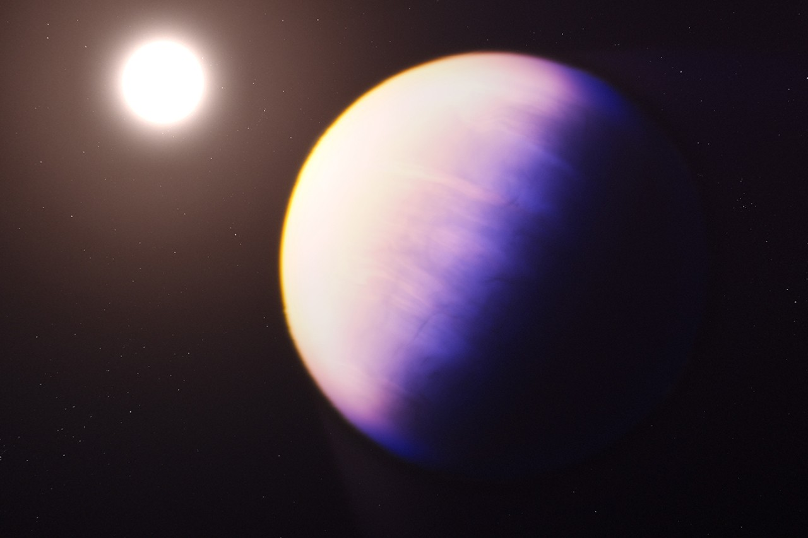

Welcome To
Beyond Kuiper Belt
Beyond Kuiper Belt

Exo-Planets
An exoplanet is any planet beyond our solar system. Most orbit other stars, but free-floating exoplanets, called rogue planets, orbit the galactic center and are untethered to any star.
- TRAPPIST-1 System
- Proxima Centauri B

Zombie Planets
When a star reaches the end of its life, it goes supernova. This means it explodes aggressively. The ensuing blast wipes out any and all planets in the vicinity. The leftover debris of this fallen celestial body can cool and condense, forming a new planet. These planets are called zombie worlds.
- Poltergeist
- Phobetor

Gas Giants
A gas giant is a large planet mostly composed of helium and/or hydrogen. These planets, like Jupiter and Saturn in our solar system, don’t have hard surfaces and instead have swirling gases above a solid core.
- Gliese 436-B
- HD 189733 B
- WASP-121 B
- WASP-12 B